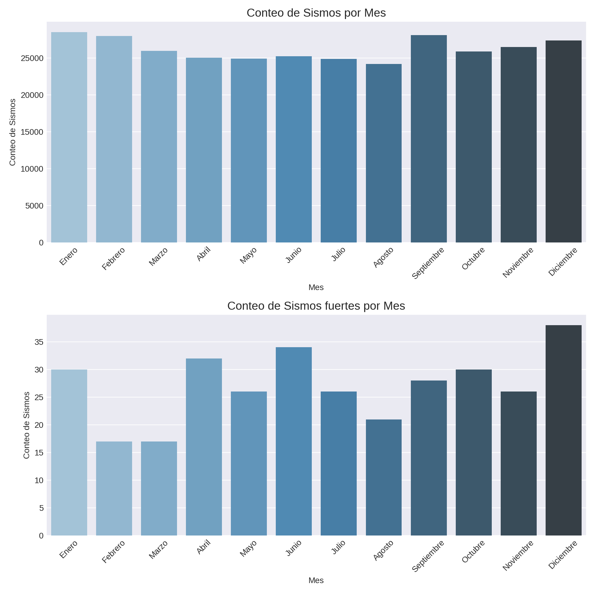

Análisis.
Distribución Temporal de los Sismos en México (1900 - 2024).
El análisis de la distribución temporal de la actividad sísmica revela patrones importantes. A lo largo del tiempo, se observan ciertos periodos de mayor frecuencia de sismos, especialmente en años recientes. Este fenómeno puede atribuirse a la mejora en los sistemas de detección y registro a partir de la década de 1970.
Diremos que un sismo es un sismo fuerte si su magnitud es mayor o igual a 6, esto basandonos en la tabla de magnitudes de la escala Richter, la que considera a los sismos de entre 6 y 6.9 sismos de magnitud fuerte, cuyos efectos pueden llegar a destruir áreas pobladas, en hasta unos 160 kilómetros a la redonda.
A continuación, se detallan los hallazgos clave:
- Frecuencia anual de sismos:
El número de eventos sísmicos registrados por año muestra un aumento progresivo, sobre todo a partir de la década de 1990. Esto sugiere una mejora en la tecnología de monitoreo más que un incremento real en la actividad sísmica.
# Contamos la cantidad de sismos por año
sismos_por_anio = sismos_df.groupby('Años').size()
# Graficamos sismos_por_anio
plt.figure(figsize=(20, 6))
sismos_por_anio.plot(kind='bar')
plt.title('Número de Sismos por Año en México')
plt.xlabel('Año')
plt.ylabel('Número de Sismos')
plt.show()

Los sismos de gran magnitud no siguen un patrón tan claro como la frecuencia total de sismos. Estos eventos parecen estar distribuidos de manera más esporádica a lo largo del tiempo.
#Filtramos los sismos fuertes
sismos_fuertes = sismos_df >> filter(_.Magnitud >= 6)
#Contamos la cantidad de sismos fuertes por año
sismos_fuertes_por_anio = sismos_fuertes.groupby('Años').size()
# Graficamos los resultados
plt.figure(figsize=(20, 6))
sismos_fuertes_por_anio.plot(kind='bar')
plt.title('Número de Sismos Fuertes por Año en México')
plt.xlabel('Año')
plt.ylabel('Número de Sismos')
plt.show()

Distribución Mensual de los Sismos.
El análisis de la frecuencia de sismos por mes muestra que la actividad sísmica está relativamente distribuida de manera uniforme a lo largo del año. Sin embargo, algunos meses parecen tener más actividad que otros.
# Estilo para el gráfico
plt.style.use('seaborn-darkgrid')
sns.set_palette("muted")
# Creamos la figura y los subplots
fig, axs = plt.subplots(2, 1, figsize=(10, 10))
# Gráfico 1: Conteo de sismos por mes
sns.barplot(x='Mes', y='Conteo_de_Sismos', data=sismos_por_mes, ax=axs[0], palette="Blues_d")
axs[0].set_title('Conteo de Sismos por Mes', fontsize=14)
axs[0].set_xlabel('Mes')
axs[0].set_ylabel('Conteo de Sismos')
axs[0].tick_params(axis='x', rotation=45)
## Gráfico 2: Conteo de sismos fuertes por mes
sns.barplot(x='Mes', y='Conteo_de_Sismos', data=sismos_fuertes_por_mes, ax=axs[1], palette="Blues_d")
axs[1].set_title('Conteo de Sismos fuertes por Mes', fontsize=14)
axs[1].set_xlabel('Mes')
axs[1].set_ylabel('Conteo de Sismos')
axs[1].tick_params(axis='x', rotation=45)
# Ajustamos el diseño de la figura
plt.tight_layout()
plt.show()
No se observa un patrón claro de estacionalidad en los sismos sin tomar en cuenta su magnitud. Estos eventos ocurren en diversos meses sin una tendencia marcada. Los meses de septiembre, enero y diciembre parecen tener una mayor concentración de eventos, aunque la diferencia no es significativa. Los meses de diciembre y junio tienen una mayor concentración de eventos sísmicos de magnitud mayor o igual a 6, a diferencia de la creencia popular de que septiembre es el mes con más actividad sísmica fuerte.
Concentración Geográfica de los Sismos.
La mayor parte de la actividad sísmica en México se concentra en regiones específicas, principalmente a lo largo de la costa del Pacífico, donde convergen varias placas tectónicas. El análisis geográfico refuerza la correlación entre las zonas de subducción y la concentración de eventos sísmicos.
Utilizamos las bases de datos con la ubicación geográfica de las placas tectónicas y la división política de la república mexicana junto con la tabla de sismos para comparar su ubicación.
#Agregamos una columna llamada Tipos para agrupar respecto a ella
sismos_df['Tipos'] = 'Sismos'
sismos_fuertes['Tipos'] = 'Sismos fuertes'
placas['Tipos'] = 'Placas Tectónicas'
# Generamos el gráfico
(ggplot() +
# Mapa de México
geom_polygon(data=mapa_mexico,
mapping=aes(x="Longitud", y="Latitud", group="Grupo"),
fill="#6d6d6d", color="#bcbcbc", size=0.1) +
# Puntos de sismos
geom_point(data=sismos_df,
mapping=aes(x="Longitud", y="Latitud", color='Tipos'),
alpha=0.08, size=0.3) +
# Puntos de sismos fuertes
geom_point(data=sismos_fuertes,
mapping=aes(x="Longitud", y="Latitud", color='Tipos'),
alpha=0.8, size=0.5) +
# Líneas de placas tectónicas
geom_path(data=placas,
mapping=aes(x="Longitud", y="Latitud", group="Tipo", color='Tipos'),
size=1) +
#Generamos un geom_point para agrrgar las placas a la leyenda
geom_point(data=placas,
mapping=aes(x="Longitud", y="Latitud", group="Tipo", color='Tipos'),
size=0.01) +
# Tema, título y etiquetas
labs(title="Mapa de Sismos en México (1900-2024)",
x="Longitud", y="Latitud") +
# Modificamos la leyenda para incluir los colores correctos (usando linetype para placas)
scale_color_manual(values={'Sismos': 'orange', 'Sismos fuertes': 'red', 'Placas Tectónicas': '#ADD8E6'},
guide=guide_legend(override_aes={'linetype': 'none', 'size': 4}))+
# Estilos adicionales
theme(panel_background=element_rect(fill="#252525"), # Fondo oscuro
panel_grid_major=element_blank(),
panel_grid_minor=element_blank(),
axis_text=element_text(color="white"),
axis_title=element_text(color="white"),
plot_title=element_text(color="white", size=14, face="bold"),
plot_subtitle=element_text(color="white", size=10),
legend_background=element_rect(fill="#252525"),
legend_title=element_text(color="white"),
legend_text=element_text(color="white"),
plot_background=element_rect(fill="#252525"),
legend_position="right")
)